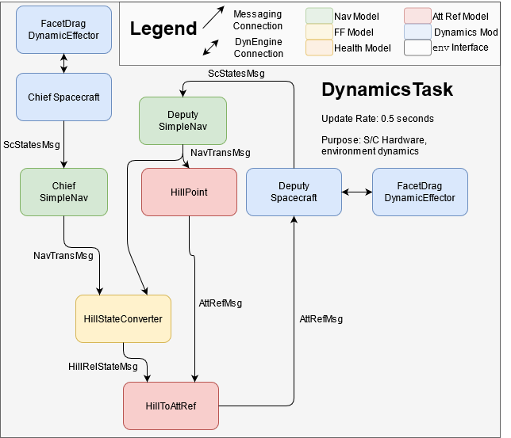
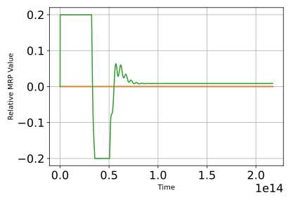
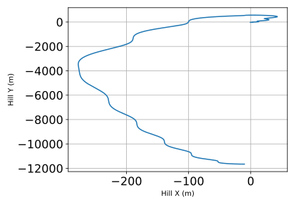
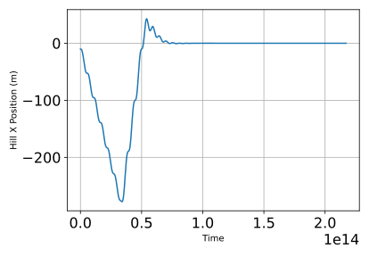
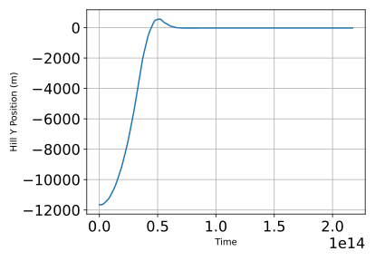

scenarioDragRendezvous¶
Overview¶
This script sets up a formation flying scenario with two spacecraft. The deputy spacecraft attempts to rendezvous with the chief using attitude-driven differential drag using the strategy outlined in this paper.
This script is found in the folder src/examples and executed by using:
python3 scenarioDragRendezvous
The simulation layout is shown in the following illustration. Two spacecraft are orbiting the earth at close distance. Perturbations from atmospheric drag, provided by Module: exponentialAtmosphere and Module: facetDragDynamicEffector, are implemented by default; the \(J_2\) gravity perturbation can also be included. Each spacecraft sends a Module: simpleNav output message of type NavAttMsgPayload continuously to a Module: hillStateConverter module, which is assumed to be a part of the deputy (maneuvering) spacecraft’s flight software stack. The Module: hillStateConverter module then writes a HillRelStateMsgPayload, which is read by the Module: hillToAttRef module implementing the differential drag attitude guidance law.
Illustration of Simulation Results¶
0.0, # altitude offset (m)
0.1, # True anomaly offset (deg)
1, # Density multiplier (non-dimensional)
ctrlType='lqr',
useJ2=False
In this case, the deputy spacecraft attempts to catch up to a reference set ten kilometers ahead of it along-track using a static LQR control law, without considering the impact of \(J_2\) perturbations. The resulting relative attitude and in-plane Hill trajectory are shown below.
Time trajectories of the in-plane Hill components of the Deputy are shown here:
- scenarioDragRendezvous.drag_simulator(altOffset, trueAnomOffset, densMultiplier, ctrlType='lqr', useJ2=False)[source]¶
Basilisk simulation of a two-spacecraft rendezvous using relative-attitude driven differential drag. Includes both static gain and desensitized time-varying gain options and the option to use simulated attitude control or direct reference inputs.
- Parameters
chief (trueAnomOffset - double - deputy true anomaly difference from the) –
chief –
- scenarioDragRendezvous.setup_spacecraft_plant(rN, vN, modelName)[source]¶
Convenience function to set up a spacecraft and its associated dragEffector and simpleNav module.
- Parameters
rN (float(3)) – Inertial position vector
vN (float(3)) – Inertial velocity vector
modelName (string) – String specifying the spacecraft name